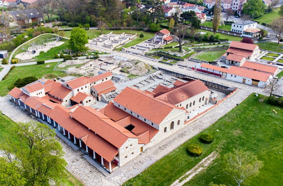
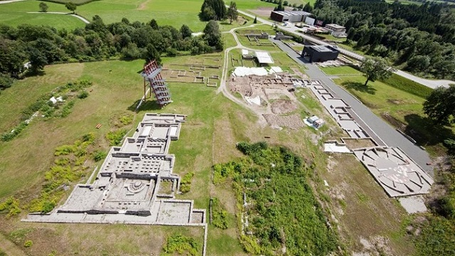

|
A U S T R I A
La actual Austria, estaba poblada por la tribu celta de los Noricum. A finales del siglo I a.e.c., las tierras al sur de Danubio se convirtieron en parte del Imperio romano, primero como reino vasallo independiente, y luego se incorporaron como la provincia de Noricum alrededor del año 40. En época romana la mayor parte del territorio de la actual Austria formaba parte de las provincias romanas de Noricum, Raetiay la Pannonia. Destacamos: El asentamiento romano más importante fue Carnuntum. El parque arqueológico de Carnuntum se encuentra en el este de Austria y en él vuelve a adquirir vida la historia de Roma. Carnuntum fue un importante asentamiento romano fundado a mediados del siglo I en un cruce de rutas comerciales junto al Danubio, que llegó a convertirse en una de las ciudades más importantes del Imperio Romano.

Ver:
Parque Arqueológico de Carnuntum
La villa romana de Bregenz, antigua Brigantium. En Enns el Museum Lauriacum. El campamento militar de Lauriacum fue levantado, por la Legio II Italica, alrededor del año 200. Esta legión fue reclutada por el emperador Marco Aurelio para las campañas contra las tribus germánicas del Norte. Alrededor del 212 nació un asentamiento civil, al oeste del campamento militar, que se cree fue elevado al rango de municipio durante el principado de Caracalla. El campamento fue devastado por las tribus bárbaras del otro lado del Limes en torno al 272. Fue reconstruido y nuevamente destruido en el siglo V. El Parque Arqueológico de Lienz, antigua Aguntum. Es el único asentamiento romano conocido en el Tirol. Aguntum era importante por las exportaciones de cobre, madera y cristales de las montañas del Tauern.
 Ver: Aguntum - Museo | Parque Arqueológico
El Parque
Arqueológico de Magdalensberg y su anfiteatro romano de Virunum.
En época del emperador Claudio se fundó el Municipium Claudium Virunum
como la capital de la provincia romana de Noricum. Virunum estaba
situada en la ruta del Adriático al Danubio, comunicada además con la
Ruta del Ambar. La ciudad tenía el derecho latino y en ella estuvo el
gobernador provincial hasta mediados del siglo II. En el parque
arqueológico podemos visitar las ruinas de un barrio artesano y uno de
los complejos termales de la ciudad, el foro. El anfiteatro romano de
Virunum. Fue identificado en 1935. Fue construido en torno al 131 y
reformado en tiempos del emperador Cómodo. La planta de este anfiteatro,
de orientación norte-sur, difiere de la típica de este tipo de
construcciones, al tener la forma de un largo óvalo, no elipsoidal.
Tenía unas medidas de 108x46m. En él se podían acomodar unos 4.000
espectadores.
Ver:
Parque Arqueológico
Magdalensberg Las canteras romanas de St. Margarethen. St. Peter in Holz, antiguo asentamiento celta de Teurnia, la Tiburnia romana. Conquistada por los romanos alrededor del al 15 a.e.c., con la ocupación del reino de Noricum. A partir del año 50 según Plinio, se convirtió en municipo romano. Se construyeron grandes edificios públicos, el foro, las termas, etc. Con las reformas de Diocleciano se convirtió en la capital de la provincia Noricum Mediterraneum. También fue sede obispal. Su declive se produjo a finales del siglo VI. El Limes romano del Danubio, desde el año 40, fue durante más de cuatro siglos un sistema de fortificaciones de la línea defensiva del Imperio Romano ante las incursiones de tribus bárbaras procedentes del Norte, hasta el abandono de la frontera establecida en Noricum en el 487-488. La Vía Claudia Augustana, comunicaba de la llanura del Po y la antigua Raetia, extendiéndola entre el Mar Adriático y el curso alto del Danubio. Y la Ruta romana del Ambar a su paso por la actual Austria. La torre romana de Tulln an der Donau. El campamento romanoo de Comagenis fue construido en torno al 80, para reforzar la frontera imperial en el Danubio. En él estaba acantonada una unidad auxiliar de caballería, Ala I Commagenorum, cuyo misión era la de proteger el límite septentrional de la provincia romana de Noricum. Inicialmente, fue construido en madera, siendo reconstruido en piedra entorno al año 104. En 1984, se descubrió y restauraron los vestigios de la doble puerta oriental de piedra del acceso al campamento, la Porta Principalis Dextra. También podemos visitar su museo romano. Los monumentos de época romana en la capital, Viena. En el centro histórico de podemos ver el trazado del antiguo campamento romano de Vindobona. Data del siglo I. En el 433 el emperador Teodosio II permitió a los hunos instalarse en Vindobona. Podemos ver los restos arqueológicos, las estancias de oficiales, que se encuentran bajo el Museo Romano, en la Hoher Markt. Y unos vestigios adyacentes al campamento romano len la Michaelerplatz. El templo de Hércules en Dellach im Gailtal y los vestigios del yacimiento celta-romano de Gurina. El Museo Arqueológico y el lienzo de muralla en Wels.
|